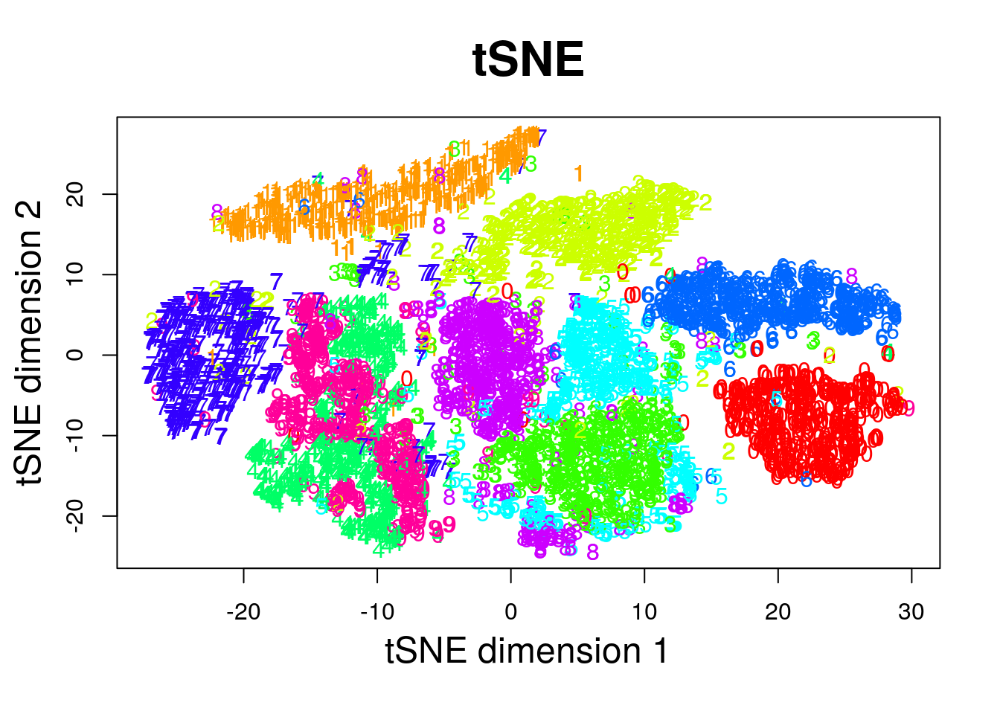
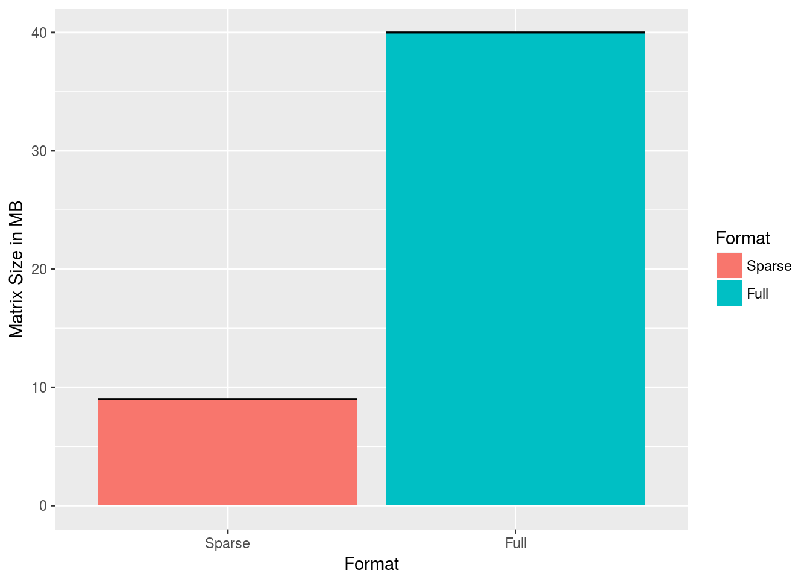

Chapter 10 Supervised Learning
Machine learning is very similar to statistics, but it is certainly not the same. As the name suggests, in machine learning we want machines to learn. This means that we want to replace hard-coded expert algorithm, with data-driven self-learned algorithm.
There are many learning setups, that depend on what information is available to the machine. The most common setup, discussed in this chapter, is supervised learning. The name takes from the fact that by giving the machine data samples with known inputs (a.k.a. features) and desired outputs (a.k.a. labels), the human is effectively supervising the learning. If we think of the inputs as predictors, and outcomes as predicted, it is no wonder that supervised learning is very similar to statistical prediction. When asked “are these the same?” I like to give the example of internet fraud. If you take a sample of fraud “attacks”, a statistical formulation of the problem is highly unlikely. This is because fraud events are not randomly drawn from some distribution, but rather, arrive from an adversary learning the defenses and adapting to it. This instance of supervised learning is more similar to game theory than statistics.
Other types of machine learning problems include (Sammut and Webb 2011):
Unsupervised Learning: Where we merely analyze the inputs/features, but no desirable outcome is available to the learning machine. See Chapter 11.
Semi Supervised Learning: Where only part of the samples are labeled. A.k.a. co-training, learning from labeled and unlabeled data, transductive learning.
Active Learning: Where the machine is allowed to query the user for labels. Very similar to adaptive design of experiments.
Learning on a Budget: A version of active learning where querying for labels induces variable costs.
Weak Learning: A version of supervised learning where the labels are given not by an expert, but rather by some heuristic rule. Example: mass-labeling cyber attacks by a rule based software, instead of a manual inspection.
Reinforcement Learning:
Similar to active learning, in that the machine may query for labels. Different from active learning, in that the machine does not receive labels, but rewards.Structure Learning: An instance of supervised learning where we predict objects with structure such as dependent vectors, graphs, images, tensors, etc.
Online Learning: An instance of supervised learning, where we need to make predictions where data inputs as a stream.
Transduction: An instance of supervised learning where we need to make predictions for a new set of predictors, but which are known at the time of learning. Can be thought of as semi-supervised extrapolation.
Covariate shift: An instance of supervised learning where we need to make predictions for a set of predictors that ha a different distribution than the data generating source.
Targeted Learning: A form of supervised learning, designed at causal inference for decision making.
Co-training: An instance of supervised learning where we solve several problems, and exploit some assumed relation between the problems.
Manifold learning: An instance of unsupervised learning, where the goal is to reduce the dimension of the data by embedding it into a lower dimensional manifold. A.k.a. support estimation.
Similarity Learning: Where we try to learn how to measure similarity between objects (like faces, texts, images, etc.).
Metric Learning: Like similarity learning, only that the similarity has to obey the definition of a metric.
Learning to learn: Deals with the carriage of “experience” from one learning problem to another. A.k.a. cummulative learning, knowledge transfer, and meta learning.
10.1 Problem Setup
We now present the empirical risk minimization (ERM) approach to supervised learning, a.k.a. M-estimation in the statistical literature.
Given \(n\) samples with inputs \(x\) from some space \(\mathcal{X}\) and desired outcome, \(y\), from some space \(\mathcal{Y}\). In our example, \(y\) is the spam/no-spam label, and \(x\) is a vector of the mail’s attributes. Samples, \((x,y)\) have some distribution we denote \(P\). We want to learn a function that maps inputs to outputs, i.e., that classifies to spam given. This function is called a hypothesis, or predictor, denoted \(f\), that belongs to a hypothesis class \(\mathcal{F}\) such that \(f:\mathcal{X} \to \mathcal{Y}\). We also choose some other function that fines us for erroneous prediction. This function is called the loss, and we denote it by \(l:\mathcal{Y}\times \mathcal{Y} \to \mathbb{R}^+\).
The fundamental task in supervised (statistical) learning is to recover a hypothesis that minimizes the average loss in the sample, and not in the population. This is know as the risk minimization problem.
The best predictor, is the risk minimizer: \[\begin{align} f^* := argmin_f \{R(f)\}. \tag{10.1} \end{align}\]
Another fundamental problem is that we do not know the distribution of all possible inputs and outputs, \(P\). We typically only have a sample of \((x_i,y_i), i=1,\dots,n\). We thus state the empirical counterpart of (10.1), which consists of minimizing the average loss. This is known as the empirical risk miminization problem (ERM).
A good candidate proxy for \(f^*\) is its empirical counterpart, \(\hat f\), known as the empirical risk minimizer: \[\begin{align} \hat f := argmin_f \{ R_n(f) \}. \tag{10.2} \end{align}\]
To make things more explicit:
- \(f\) may be a linear function of the attributes, so that it may be indexed simply with its coefficient vector \(\beta\).
- \(l\) may be a squared error loss: \(l(f(x),y):=(f(x)-y)^2\).
Under these conditions, the best predictor \(f^* \in \mathcal{F}\) from problem (10.1) is to \[\begin{align} f^* := argmin_\beta \{ \mathbb{E}_{P(x,y)}[(x'\beta-y)^2] \}. \end{align}\]
When using a linear hypothesis with squared loss, we see that the empirical risk minimization problem collapses to an ordinary least-squares problem: \[\begin{align} \hat f := argmin_\beta \{1/n \sum_i (x_i'\beta - y_i)^2 \}. \end{align}\]
When data samples are assumingly independent, then maximum likelihood estimation is also an instance of ERM, when using the (negative) log likelihood as the loss function.
If we don’t assume any structure on the hypothesis, \(f\), then \(\hat f\) from (10.2) will interpolate the data, and \(\hat f\) will be a very bad predictor. We say, it will overfit the observed data, and will have bad performance on new data.
We have several ways to avoid overfitting:
- Restrict the hypothesis class \(\mathcal{F}\) (such as linear functions).
- Penalize for the complexity of \(f\). The penalty denoted by \(\Vert f \Vert\).
- Unbiased risk estimation: \(R_n(f)\) is not an unbiased estimator of \(R(f)\). Why? Think of estimating the mean with the sample minimum… Because \(R_n(f)\) is downward biased, we may add some correction term, or compute \(R_n(f)\) on different data than the one used to recover \(\hat f\).
Almost all ERM algorithms consist of some combination of all the three methods above.
10.1.1 Common Hypothesis Classes
Some common hypothesis classes, \(\mathcal{F}\), with restricted complexity, are:
Linear hypotheses: such as linear models, GLMs, and (linear) support vector machines (SVM).
Neural networks: a.k.a. feed-forward neural nets, artificial neural nets, and the celebrated class of deep neural nets.
- Tree: a.k.a. decision rules, is a class of hypotheses which can be stated as “if-then” rules.
Reproducing Kernel Hilbert Space: a.k.a. RKHS, is a subset of “the space of all functions19” that is both large enough to capture very complicated relations, but small enough so that it is less prone to overfitting, and also surprisingly simple to compute with.
10.1.2 Common Complexity Penalties
The most common complexity penalty applies to classes that have a finite dimensional parametric representation, such as the class of linear predictors, parametrized via its coefficients \(\beta\). In such classes we may penalize for the norm of the parameters. Common penalties include:
- Ridge penalty: penalizing the \(l_2\) norm of the parameter. I.e. \(\Vert f \Vert=\Vert \beta \Vert_2^2=\sum_j \beta_j^2\).
- LASSO penalty: penalizing the \(l_1\) norm of the parameter. I.e., \(\Vert f \Vert=\Vert \beta \Vert_1=\sum_j |\beta_j|\). Also known as Basis Pursuit, in signal processing.
- Elastic net: a combination of the lasso and ridge penalty. I.e. ,\(\Vert f \Vert= \alpha \Vert \beta \Vert_2^2 + (1-\alpha) \Vert \beta \Vert_1\).
- Function Norms: If the hypothesis class \(\mathcal{F}\) does not admit a finite dimensional representation, the penalty is no longer a function of the parameters of the function. We may, however, penalize not the parametric representation of the function, but rather the function itself \(\Vert f \Vert=\sqrt{\int f(t)^2 dt}\).
10.1.3 Unbiased Risk Estimation
The fundamental problem of overfitting, is that the empirical risk, \(R_n(\hat f)\), is downward biased to the population risk, \(R(\hat f)\). We can remove this bias in two ways: (a) purely algorithmic resampling approaches, and (b) theory driven estimators.
Train-Validate-Test: The simplest form of algorithmic validation is to split the data. A train set to train/estimate/learn \(\hat f\). A validation set to compute the out-of-sample expected loss, \(R(\hat f)\), and pick the best performing predictor. A test sample to compute the out-of-sample performance of the selected hypothesis. This is a very simple approach, but it is very “data inefficient”, thus motivating the next method.
V-Fold Cross Validation: By far the most popular algorithmic unbiased risk estimator; in V-fold CV we “fold” the data into \(V\) non-overlapping sets. For each of the \(V\) sets, we learn \(\hat f\) with the non-selected fold, and assess \(R(\hat f)\)) on the selected fold. We then aggregate results over the \(V\) folds, typically by averaging.
AIC: Akaike’s information criterion (AIC) is a theory driven correction of the empirical risk, so that it is unbiased to the true risk. It is appropriate when using the likelihood loss.
Cp: Mallow’s Cp is an instance of AIC for likelihood loss under normal noise.
Other theory driven unbiased risk estimators include the Bayesian Information Criterion (BIC, aka SBC, aka SBIC), the Minimum Description Length (MDL), Vapnic’s Structural Risk Minimization (SRM), the Deviance Information Criterion (DIC), and the Hannan-Quinn Information Criterion (HQC).
Other resampling based unbiased risk estimators include resampling without replacement algorithms like delete-d cross validation with its many variations, and resampling with replacement, like the bootstrap, with its many variations.
10.1.4 Collecting the Pieces
An ERM problem with regularization will look like \[\begin{align} \hat f := argmin_{f \in \mathcal{F}} \{ R_n(f) + \lambda \Vert f \Vert \}. \tag{10.3} \end{align}\]
Collecting ideas from the above sections, a typical supervised learning pipeline will include: choosing the hypothesis class, choosing the penalty function and level, unbiased risk estimator. We emphasize that choosing the penalty function, \(\Vert f \Vert\) is not enough, and we need to choose how “hard” to apply it. This if known as the regularization level, denoted by \(\lambda\) in Eq.(10.3).
Examples of such combos include:
- Linear regression, no penalty, train-validate test.
- Linear regression, no penalty, AIC.
- Linear regression, \(l_2\) penalty, V-fold CV. This combo is typically known as ridge regression.
- Linear regression, \(l_1\) penalty, V-fold CV. This combo is typically known as LASSO regression.
- Linear regression, \(l_1\) and \(l_2\) penalty, V-fold CV. This combo is typically known as elastic net regression.
- Logistic regression, \(l_2\) penalty, V-fold CV.
- SVM classification, \(l_2\) penalty, V-fold CV.
- Deep network, no penalty, V-fold CV.
- Unrestricted, \(\Vert \partial^2 f \Vert_2\), V-fold CV. This combo is typically known as a smoothing spline.
For fans of statistical hypothesis testing we will also emphasize: Testing and prediction are related, but are not the same:
- In the current chapter, we do not claim our models, \(f\), are generative. I.e., we do not claim that there is some causal relation between \(x\) and \(y\). We only claim that \(x\) predicts \(y\).
- It is possible that we will want to ignore a significant predictor, and add a non-significant one (Foster and Stine 2004).
- Some authors will use hypothesis testing as an initial screening for candidate predictors. This is a useful heuristic, but that is all it is– a heuristic. It may also fail miserably if predictors are linearly dependent (a.k.a. multicollinear).
10.2 Supervised Learning in R
At this point, we have a rich enough language to do supervised learning with R.
In these examples, I will use two data sets from the ElemStatLearn package, that accompanies the seminal book by Friedman, Hastie, and Tibshirani (2001).
I use the spam data for categorical predictions, and prostate for continuous predictions.
In spam we will try to decide if a mail is spam or not.
In prostate we will try to predict the size of a cancerous tumor.
You can now call ?prostate and ?spam to learn more about these data sets.
Some boring pre-processing.
# Preparing prostate data
data("prostate", package = 'ElemStatLearn')
prostate <- data.table::data.table(prostate)
prostate.train <- prostate[train==TRUE, -"train"]
prostate.test <- prostate[train!=TRUE, -"train"]
y.train <- prostate.train$lcavol
X.train <- as.matrix(prostate.train[, -'lcavol'] )
y.test <- prostate.test$lcavol
X.test <- as.matrix(prostate.test[, -'lcavol'] )
# Preparing spam data:
data("spam", package = 'ElemStatLearn')
n <- nrow(spam)
train.prop <- 0.66
train.ind <- sample(x = c(TRUE,FALSE),
size = n,
prob = c(train.prop,1-train.prop),
replace=TRUE)
spam.train <- spam[train.ind,]
spam.test <- spam[!train.ind,]
y.train.spam <- spam.train$spam
X.train.spam <- as.matrix(spam.train[,names(spam.train)!='spam'] )
y.test.spam <- spam.test$spam
X.test.spam <- as.matrix(spam.test[,names(spam.test)!='spam'])
spam.dummy <- spam
spam.dummy$spam <- as.numeric(spam$spam=='spam')
spam.train.dummy <- spam.dummy[train.ind,]
spam.test.dummy <- spam.dummy[!train.ind,]We also define some utility functions that we will require down the road.
l2 <- function(x) x^2 %>% sum %>% sqrt
l1 <- function(x) abs(x) %>% sum
MSE <- function(x) x^2 %>% mean
missclassification <- function(tab) sum(tab[c(2,3)])/sum(tab)10.2.1 Linear Models with Least Squares Loss
The simplest approach to supervised learning, is simply with OLS: a linear predictor, squared error loss, and train-test risk estimator. Notice the better in-sample MSE than the out-of-sample. That is overfitting in action.
ols.1 <- lm(lcavol~. ,data = prostate.train)
# Train error:
MSE( predict(ols.1)-prostate.train$lcavol) ## [1] 0.4383709# Test error:
MSE( predict(ols.1, newdata=prostate.test)- prostate.test$lcavol)## [1] 0.5084068Things to note:
- I use the
newdataargument of thepredictfunction to make the out-of-sample predictions required to compute the test-error. - The test error is larger than the train error. That is overfitting in action.
We now implement a V-fold CV, instead of our train-test approach.
The assignment of each observation to each fold is encoded in fold.assignment.
The following code is extremely inefficient, but easy to read.
folds <- 10
fold.assignment <- sample(1:folds, nrow(prostate), replace = TRUE)
errors <- NULL
for (k in 1:folds){
prostate.cross.train <- prostate[fold.assignment!=k,] # train subset
prostate.cross.test <- prostate[fold.assignment==k,] # test subset
.ols <- lm(lcavol~. ,data = prostate.cross.train) # train
.predictions <- predict(.ols, newdata=prostate.cross.test)
.errors <- .predictions-prostate.cross.test$lcavol # save prediction errors in the fold
errors <- c(errors, .errors) # aggregate error over folds.
}
# Cross validated prediction error:
MSE(errors)## [1] 0.5404713Let’s try all possible variable subsets, and choose the best performer with respect to the Cp criterion, which is an unbiased risk estimator.
This is done with leaps::regsubsets.
We see that the best performer has 3 predictors.
regfit.full <- prostate.train %>%
leaps::regsubsets(lcavol~.,data = ., method = 'exhaustive') # best subset selection
plot(regfit.full, scale = "Cp")
Things to note:
- The plot shows us which is the variable combination which is the best, i.e., has the smallest Cp.
- Scanning over all variable subsets is impossible when the number of variables is large.
Instead of the Cp criterion, we now compute the train and test errors for all the possible predictor subsets20. In the resulting plot we can see overfitting in action.
model.n <- regfit.full %>% summary %>% length
X.train.named <- model.matrix(lcavol ~ ., data = prostate.train )
X.test.named <- model.matrix(lcavol ~ ., data = prostate.test )
val.errors <- rep(NA, model.n)
train.errors <- rep(NA, model.n)
for (i in 1:model.n) {
coefi <- coef(regfit.full, id = i) # exctract coefficients of i'th model
pred <- X.train.named[, names(coefi)] %*% coefi # make in-sample predictions
train.errors[i] <- MSE(y.train - pred) # train errors
pred <- X.test.named[, names(coefi)] %*% coefi # make out-of-sample predictions
val.errors[i] <- MSE(y.test - pred) # test errors
}Plotting results.
plot(train.errors, ylab = "MSE", pch = 19, type = "o")
points(val.errors, pch = 19, type = "b", col="blue")
legend("topright",
legend = c("Training", "Validation"),
col = c("black", "blue"),
pch = 19)
Checking all possible models is computationally very hard. Forward selection is a greedy approach that adds one variable at a time.
ols.0 <- lm(lcavol~1 ,data = prostate.train)
model.scope <- list(upper=ols.1, lower=ols.0)
step(ols.0, scope=model.scope, direction='forward', trace = TRUE)## Start: AIC=30.1
## lcavol ~ 1
##
## Df Sum of Sq RSS AIC
## + lpsa 1 54.776 47.130 -19.570
## + lcp 1 48.805 53.101 -11.578
## + svi 1 35.829 66.077 3.071
## + pgg45 1 23.789 78.117 14.285
## + gleason 1 18.529 83.377 18.651
## + lweight 1 9.186 92.720 25.768
## + age 1 8.354 93.552 26.366
## <none> 101.906 30.097
## + lbph 1 0.407 101.499 31.829
##
## Step: AIC=-19.57
## lcavol ~ lpsa
##
## Df Sum of Sq RSS AIC
## + lcp 1 14.8895 32.240 -43.009
## + svi 1 5.0373 42.093 -25.143
## + gleason 1 3.5500 43.580 -22.817
## + pgg45 1 3.0503 44.080 -22.053
## + lbph 1 1.8389 45.291 -20.236
## + age 1 1.5329 45.597 -19.785
## <none> 47.130 -19.570
## + lweight 1 0.4106 46.719 -18.156
##
## Step: AIC=-43.01
## lcavol ~ lpsa + lcp
##
## Df Sum of Sq RSS AIC
## <none> 32.240 -43.009
## + age 1 0.92315 31.317 -42.955
## + pgg45 1 0.29594 31.944 -41.627
## + gleason 1 0.21500 32.025 -41.457
## + lbph 1 0.13904 32.101 -41.298
## + lweight 1 0.05504 32.185 -41.123
## + svi 1 0.02069 32.220 -41.052##
## Call:
## lm(formula = lcavol ~ lpsa + lcp, data = prostate.train)
##
## Coefficients:
## (Intercept) lpsa lcp
## 0.08798 0.53369 0.38879Things to note:
- By default
stepadd variables according to the AIC criterion, which is a theory-driven unbiased risk estimator. - We need to tell
stepwhich is the smallest and largest models to consider using thescopeargument. direction='forward'is used to “grow” from a small model. For “shrinking” a large model, usedirection='backward', or the defaultdirection='stepwise'.
We now learn a linear predictor on the spam data using, a least squares loss, and train-test risk estimator.
# Train the predictor
ols.2 <- lm(spam~., data = spam.train.dummy)
# make in-sample predictions
.predictions.train <- predict(ols.2) > 0.5
# inspect the confusion matrix
(confusion.train <- table(prediction=.predictions.train, truth=spam.train.dummy$spam)) ## truth
## prediction 0 1
## FALSE 1778 227
## TRUE 66 980# compute the train (in sample) misclassification
missclassification(confusion.train) ## [1] 0.09603409# make out-of-sample prediction
.predictions.test <- predict(ols.2, newdata = spam.test.dummy) > 0.5
# inspect the confusion matrix
(confusion.test <- table(prediction=.predictions.test, truth=spam.test.dummy$spam))## truth
## prediction 0 1
## FALSE 884 139
## TRUE 60 467# compute the train (in sample) misclassification
missclassification(confusion.test)## [1] 0.1283871Things to note:
- I can use
lmfor categorical outcomes.lmwill simply dummy-code the outcome. - A linear predictor trained on 0’s and 1’s will predict numbers. Think of these numbers as the probability of 1, and my prediction is the most probable class:
predicts()>0.5. - The train error is smaller than the test error. This is overfitting in action.
The glmnet package is an excellent package that provides ridge, LASSO, and elastic net regularization, for all GLMs, so for linear models in particular.
suppressMessages(library(glmnet))
means <- apply(X.train, 2, mean)
sds <- apply(X.train, 2, sd)
X.train.scaled <- X.train %>% sweep(MARGIN = 2, STATS = means, FUN = `-`) %>%
sweep(MARGIN = 2, STATS = sds, FUN = `/`)
ridge.2 <- glmnet(x=X.train.scaled, y=y.train, family = 'gaussian', alpha = 0)
# Train error:
MSE( predict(ridge.2, newx =X.train.scaled)- y.train)## [1] 1.006028# Test error:
X.test.scaled <- X.test %>% sweep(MARGIN = 2, STATS = means, FUN = `-`) %>%
sweep(MARGIN = 2, STATS = sds, FUN = `/`)
MSE(predict(ridge.2, newx = X.test.scaled)- y.test)## [1] 0.7678264Things to note:
- The
alpha=0parameters tells R to do ridge regression. Setting \(alpha=1\) will do LASSO, and any other value, with return an elastic net with appropriate weights. - The
family='gaussian'argument tells R to fit a linear model, with least squares loss. - Features for regularized predictors should be z-scored before learning.
- We use the
sweepfunction to z-score the predictors: we learn the z-scoring from the train set, and apply it to both the train and the test. - The test error is smaller than the train error. This may happen because risk estimators are random. Their variance may mask the overfitting.
We now use the LASSO penalty.
lasso.1 <- glmnet(x=X.train.scaled, y=y.train, , family='gaussian', alpha = 1)
# Train error:
MSE( predict(lasso.1, newx =X.train.scaled)- y.train)## [1] 0.5525279# Test error:
MSE( predict(lasso.1, newx = X.test.scaled)- y.test)## [1] 0.5211263We now use glmnet for classification.
means.spam <- apply(X.train.spam, 2, mean)
sds.spam <- apply(X.train.spam, 2, sd)
X.train.spam.scaled <- X.train.spam %>% sweep(MARGIN = 2, STATS = means.spam, FUN = `-`) %>%
sweep(MARGIN = 2, STATS = sds.spam, FUN = `/`) %>% as.matrix
logistic.2 <- cv.glmnet(x=X.train.spam.scaled, y=y.train.spam, family = "binomial", alpha = 0)Things to note:
- We used
cv.glmnetto do an automatic search for the optimal level of regularization (thelambdaargument inglmnet) using V-fold CV. - Just like the
glmfunction,'family='binomial'is used for logistic regression. - We z-scored features so that they all have the same scale.
- We set
alpha=0for an \(l_2\) penalization of the coefficients of the logistic regression.
# Train confusion matrix:
.predictions.train <- predict(logistic.2, newx = X.train.spam.scaled, type = 'class')
(confusion.train <- table(prediction=.predictions.train, truth=spam.train$spam))## truth
## prediction email spam
## email 1779 172
## spam 65 1035# Train misclassification error
missclassification(confusion.train)## [1] 0.07767945# Test confusion matrix:
X.test.spam.scaled <- X.test.spam %>% sweep(MARGIN = 2, STATS = means.spam, FUN = `-`) %>%
sweep(MARGIN = 2, STATS = sds.spam, FUN = `/`) %>% as.matrix
.predictions.test <- predict(logistic.2, newx = X.test.spam.scaled, type='class')
(confusion.test <- table(prediction=.predictions.test, truth=y.test.spam))## truth
## prediction email spam
## email 885 111
## spam 59 495# Test misclassification error:
missclassification(confusion.test)## [1] 0.109677410.2.2 SVM
A support vector machine (SVM) is a linear hypothesis class with a particular loss function known as a hinge loss.
We learn an SVM with the svm function from the e1071 package, which is merely a wrapper for the libsvm C library; the most popular implementation of SVM today.
library(e1071)
svm.1 <- svm(spam~., data = spam.train, kernel='linear')
# Train confusion matrix:
.predictions.train <- predict(svm.1)
(confusion.train <- table(prediction=.predictions.train, truth=spam.train$spam))## truth
## prediction email spam
## email 1774 106
## spam 70 1101missclassification(confusion.train)## [1] 0.057686# Test confusion matrix:
.predictions.test <- predict(svm.1, newdata = spam.test)
(confusion.test <- table(prediction=.predictions.test, truth=spam.test$spam))## truth
## prediction email spam
## email 876 75
## spam 68 531missclassification(confusion.test)## [1] 0.09225806We can also use SVM for regression.
svm.2 <- svm(lcavol~., data = prostate.train, kernel='linear')
# Train error:
MSE( predict(svm.2)- prostate.train$lcavol)## [1] 0.4488577# Test error:
MSE( predict(svm.2, newdata = prostate.test)- prostate.test$lcavol)## [1] 0.5547759Things to note:
- The use of
kernel='linear'forces the predictor to be linear. Various hypothesis classes may be used by changing thekernelargument.
10.2.3 Neural Nets
Neural nets (non deep) can be fitted, for example, with the nnet function in the nnet package.
We start with a nnet regression.
library(nnet)
nnet.1 <- nnet(lcavol~., size=20, data=prostate.train, rang = 0.1, decay = 5e-4, maxit = 1000, trace=FALSE)
# Train error:
MSE( predict(nnet.1)- prostate.train$lcavol)## [1] 1.176479# Test error:
MSE( predict(nnet.1, newdata = prostate.test)- prostate.test$lcavol)## [1] 1.489769And nnet classification.
nnet.2 <- nnet(spam~., size=5, data=spam.train, rang = 0.1, decay = 5e-4, maxit = 1000, trace=FALSE)
# Train confusion matrix:
.predictions.train <- predict(nnet.2, type='class')
(confusion.train <- table(prediction=.predictions.train, truth=spam.train$spam))## truth
## prediction email spam
## email 1825 56
## spam 19 1151missclassification(confusion.train)## [1] 0.0245821# Test confusion matrix:
.predictions.test <- predict(nnet.2, newdata = spam.test, type='class')
(confusion.test <- table(prediction=.predictions.test, truth=spam.test$spam))## truth
## prediction email spam
## email 891 66
## spam 53 540missclassification(confusion.test)## [1] 0.0767741910.2.3.1 Deep Neural Nets
Deep-Neural-Networks are undoubtedly the “hottest” topic in machine-learning and artificial intelligence. This real is too vast to be covered in this text. We merely refer the reader to the tensorflow package documentation as a starting point.
10.2.4 Classification and Regression Trees (CART)
A CART, is not a linear hypothesis class. It partitions the feature space \(\mathcal{X}\), thus creating a set of if-then rules for prediction or classification. It is thus particularly useful when you believe that the predicted classes may change abruptly with small changes in \(x\).
10.2.4.1 The rpart Package
This view clarifies the name of the function rpart, which recursively partitions the feature space.
We start with a regression tree.
library(rpart)
tree.1 <- rpart(lcavol~., data=prostate.train)
# Train error:
MSE( predict(tree.1)- prostate.train$lcavol)## [1] 0.4909568# Test error:
MSE( predict(tree.1, newdata = prostate.test)- prostate.test$lcavol)## [1] 0.5623316We can use the rpart.plot package to visualize and interpret the predictor.
rpart.plot::rpart.plot(tree.1)
Or the newer ggparty package, for trees fitted with the party package.
Trees are very prone to overfitting.
To avoid this, we reduce a tree’s complexity by pruning it.
This is done with the rpart::prune function (not demonstrated herein).
We now fit a classification tree.
tree.2 <- rpart(spam~., data=spam.train)
# Train confusion matrix:
.predictions.train <- predict(tree.2, type='class')
(confusion.train <- table(prediction=.predictions.train, truth=spam.train$spam))## truth
## prediction email spam
## email 1785 217
## spam 59 990missclassification(confusion.train)## [1] 0.09046214# Test confusion matrix:
.predictions.test <- predict(tree.2, newdata = spam.test, type='class')
(confusion.test <- table(prediction=.predictions.test, truth=spam.test$spam))## truth
## prediction email spam
## email 906 125
## spam 38 481missclassification(confusion.test)## [1] 0.105161310.2.4.2 The caret Package
In the rpart package [10.2.4.1] we grow a tree with one function, and then prune it with another.
The caret implementation of trees does both with a single function.
We demonstrate the package in the context of trees, but it is actually a very convenient wrapper for many learning algorithms; 237(!)
learning algorithms to be precise.
library(caret)
# Control some training parameters
train.control <- trainControl(method = "cv",
number = 10)
tree.3 <- train(lcavol~., data=prostate.train,
method='rpart',
trControl=train.control)
tree.3## CART
##
## 67 samples
## 8 predictor
##
## No pre-processing
## Resampling: Cross-Validated (10 fold)
## Summary of sample sizes: 61, 59, 60, 60, 59, 60, ...
## Resampling results across tuning parameters:
##
## cp RMSE Rsquared MAE
## 0.04682924 0.9668668 0.4461882 0.8228133
## 0.14815712 1.0015301 0.3936400 0.8483732
## 0.44497285 1.2100666 0.1678312 1.0055867
##
## RMSE was used to select the optimal model using the smallest value.
## The final value used for the model was cp = 0.04682924.# Train error:
MSE( predict(tree.3)- prostate.train$lcavol)## [1] 0.6188435# Test error:
MSE( predict(tree.3, newdata = prostate.test)- prostate.test$lcavol)## [1] 0.545632Things to note:
- A tree was trained because of the
method='rpart'argument. Many other predictive models are available. See here. - The pruning of the tree was done automatically by the
caret::train()function. - The method of pruning is controlled by a control object, generated with the
caret::trainControl()function. In our case,method = "cv"for cross-validation, andnumber = 10for 10-folds. - The train error is larger than the test error. This is possible because the tree is not an ERM on the train data. Rather, it is an ERM on the variations of the data generated by the cross-validation process.
10.2.4.3 The parsnip package
At this point you may have noted that different R packages have differet interfaces to specify and fit models. Wouldn’t it be nice to have a unified language that allows to specify a model, indpendently of the undelying fitting libraries? This is percisely the purpose of parsnip, created by Max Kuhn, the author of caret. With parsnip, you specify a model, save it, and can later dispatch it to fitting with lm, glmnet, Spark, or other fitting libraries. This is much like ggplot2, where you specify a plot, save it, and dispatch it for printing using print().
TODO: add code examples.
10.2.5 K-nearest neighbour (KNN)
KNN is not an ERM problem. In the KNN algorithm, a prediction at some \(x\) is made based on the \(y\) is it neighbors. This means that:
- KNN is an Instance Based learning algorithm where we do not learn the values of some parametric function, but rather, need the original sample to make predictions. This has many implications when dealing with “BigData”.
- It may only be applied in spaces with known/defined metric. It is thus harder to apply in the presence of missing values, or in “string-spaces”, “genome-spaces”, etc. where no canonical metric exists.
KNN is so fundamental that we show how to fit such a hypothesis class, even if it not an ERM algorithm. Is KNN any good? I have never seen a learning problem where KNN beats other methods. Others claim differently.
library(class)
knn.1 <- knn(train = X.train.spam.scaled, test = X.test.spam.scaled, cl =y.train.spam, k = 1)
# Test confusion matrix:
.predictions.test <- knn.1
(confusion.test <- table(prediction=.predictions.test, truth=spam.test$spam))## truth
## prediction email spam
## email 856 86
## spam 88 520missclassification(confusion.test)## [1] 0.112258110.2.6 Linear Discriminant Analysis (LDA)
LDA is equivalent to least squares classification 10.2.1.
This means that we actually did LDA when we used lm for binary classification (feel free to compare the confusion matrices).
There are, however, some dedicated functions to fit it which we now introduce.
library(MASS)
lda.1 <- lda(spam~., spam.train)
# Train confusion matrix:
.predictions.train <- predict(lda.1)$class
(confusion.train <- table(prediction=.predictions.train, truth=spam.train$spam))## truth
## prediction email spam
## email 1776 227
## spam 68 980missclassification(confusion.train)## [1] 0.09668961# Test confusion matrix:
.predictions.test <- predict(lda.1, newdata = spam.test)$class
(confusion.test <- table(prediction=.predictions.test, truth=spam.test$spam))## truth
## prediction email spam
## email 884 138
## spam 60 468missclassification(confusion.test)## [1] 0.127741910.2.7 Naive Bayes
Naive-Bayes can be thought of LDA, i.e. linear regression, where predictors are assume to be uncorrelated. Predictions may be very good and certainly very fast, even if this assumption is not true.
library(e1071)
nb.1 <- naiveBayes(spam~., data = spam.train)
# Train confusion matrix:
.predictions.train <- predict(nb.1, newdata = spam.train)
(confusion.train <- table(prediction=.predictions.train, truth=spam.train$spam))## truth
## prediction email spam
## email 1025 55
## spam 819 1152missclassification(confusion.train)## [1] 0.2864635# Test confusion matrix:
.predictions.test <- predict(nb.1, newdata = spam.test)
(confusion.test <- table(prediction=.predictions.test, truth=spam.test$spam))## truth
## prediction email spam
## email 484 42
## spam 460 564missclassification(confusion.test)## [1] 0.32387110.2.8 Random Forrest
A Random Forrest is one of the most popular supervised learning algorithms. It it an extremely successful algorithm, with very few tuning parameters, and easily parallelizable (thus salable to massive datasets).
# Control some training parameters
train.control <- trainControl(method = "cv", number = 10)
rf.1 <- caret::train(lcavol~., data=prostate.train,
method='rf',
trControl=train.control)
rf.1## Random Forest
##
## 67 samples
## 8 predictor
##
## No pre-processing
## Resampling: Cross-Validated (10 fold)
## Summary of sample sizes: 61, 60, 59, 61, 61, 59, ...
## Resampling results across tuning parameters:
##
## mtry RMSE Rsquared MAE
## 2 0.7971605 0.6452185 0.6723825
## 5 0.7718659 0.6603524 0.6454595
## 8 0.7748043 0.6593911 0.6463712
##
## RMSE was used to select the optimal model using the smallest value.
## The final value used for the model was mtry = 5.# Train error:
MSE( predict(rf.1)- prostate.train$lcavol)## [1] 0.139739# Test error:
MSE( predict(rf.1, newdata = prostate.test)- prostate.test$lcavol)## [1] 0.5341458Some of the many many many packages that learn random-forests include: randomForest, ranger.
10.2.9 Boosting
The fundamental idea behind Boosting is to construct a predictor, as the sum of several “weak” predictors. These weak predictors, are not trained on the same data. Instead, each predictor is trained on the residuals of the previous. Think of it this way: The first predictor targets the strongest signal. The second targets what the first did not predict. Etc. At some point, the residuals cannot be predicted anymore, and the learning will stabilize. Boosting is typically, but not necessarily, implemented as a sum of trees (@(trees)).
10.2.9.1 The gbm Package
TODO
10.2.9.2 The xgboost Package
TODO
10.3 Bibliographic Notes
The ultimate reference on (statistical) machine learning is Friedman, Hastie, and Tibshirani (2001). For a softer introduction, see James et al. (2013). A statistician will also like Ripley (2007). For a very algorithmic view, see the seminal Leskovec, Rajaraman, and Ullman (2014) or Conway and White (2012). For a much more theoretical reference, see Mohri, Rostamizadeh, and Talwalkar (2012), Vapnik (2013), Shalev-Shwartz and Ben-David (2014). Terminology taken from Sammut and Webb (2011). For an R oriented view see Lantz (2013). For review of other R sources for machine learning see Jim Savege’s post, or the official Task View. For a review of resampling based unbiased risk estimation (i.e. cross validation) see the exceptional review of Arlot, Celisse, and others (2010). For feature engineering: Feature Engineering and Selection: A Practical Approach for Predictive Models. If you want to know about Deep-Nets in R see here.
10.4 Practice Yourself
- In 7.6 we fit a GLM for the
MASS::epildata (Poisson family). We assume that the number of seizures (\(y\)) depending on the age of the patient (age) and the treatment (trt).- What was the MSE of the model?
- Now, try the same with a ridge penalty using
glmnet(alpha=0). - Do the same with a LASSO penalty (
alpha=1). - Compare the test MSE of the three models. Which is the best ?
- Read about the
Glassdataset usingdata(Glass, package="mlbench")and?Glass.- Divide the dataset to train set and test set.
- Apply the various predictors from this chapter, and compare them using the proportion of missclassified.
See DataCamp’s Supervised Learning in R: Classification, and Supervised Learning in R: Regression for more self practice.
References
Arlot, Sylvain, Alain Celisse, and others. 2010. “A Survey of Cross-Validation Procedures for Model Selection.” Statistics Surveys 4. The author, under a Creative Commons Attribution License: 40–79.
Conway, Drew, and John White. 2012. Machine Learning for Hackers. " O’Reilly Media, Inc.".
Foster, Dean P, and Robert A Stine. 2004. “Variable Selection in Data Mining: Building a Predictive Model for Bankruptcy.” Journal of the American Statistical Association 99 (466). Taylor & Francis: 303–13.
Friedman, Jerome, Trevor Hastie, and Robert Tibshirani. 2001. The Elements of Statistical Learning. Vol. 1. Springer series in statistics Springer, Berlin.
James, Gareth, Daniela Witten, Trevor Hastie, and Robert Tibshirani. 2013. An Introduction to Statistical Learning. Vol. 6. Springer.
Lantz, Brett. 2013. Machine Learning with R. Packt Publishing Ltd.
Leskovec, Jure, Anand Rajaraman, and Jeffrey David Ullman. 2014. Mining of Massive Datasets. Cambridge University Press.
Mohri, Mehryar, Afshin Rostamizadeh, and Ameet Talwalkar. 2012. Foundations of Machine Learning. MIT press.
Ripley, Brian D. 2007. Pattern Recognition and Neural Networks. Cambridge university press.
Sammut, Claude, and Geoffrey I Webb. 2011. Encyclopedia of Machine Learning. Springer Science & Business Media.
Shalev-Shwartz, Shai, and Shai Ben-David. 2014. Understanding Machine Learning: From Theory to Algorithms. Cambridge university press.
Vapnik, Vladimir. 2013. The Nature of Statistical Learning Theory. Springer science & business media.
It is even a subset of the Hilbert space, itself a subset of the space of all functions.↩
Example taken from https://lagunita.stanford.edu/c4x/HumanitiesScience/StatLearning/asset/ch6.html↩